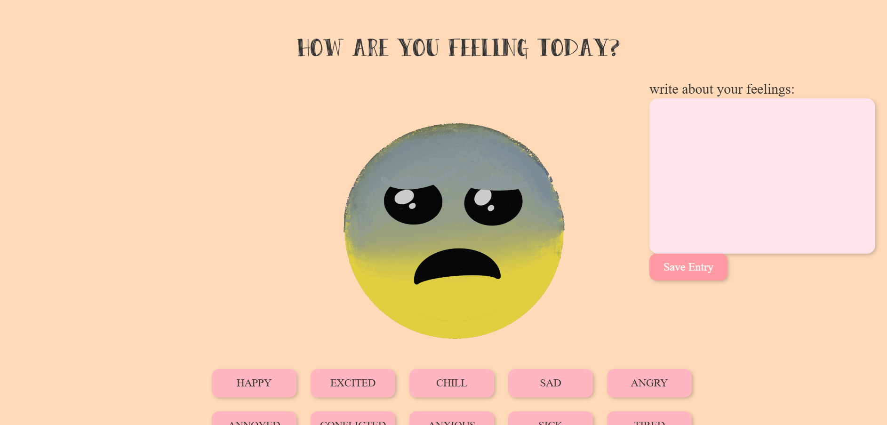

The Mood Journal is an interactive web experience designed to help users reflect on their emotions through a playful and visual journaling process. Instead of traditional text-only entries, the interface incorporates animated emotion GIFs drawn and animated using Procreate to represent feelings and moods.
Users can record how they feel and visually associate their mood with dynamic imagery. This approach transforms journaling into a more engaging and expressive digital activity while encouraging emotional reflection.
Tools Used: p5.js, Procreate
Focus: Emotional expression, interaction design, playful user experience